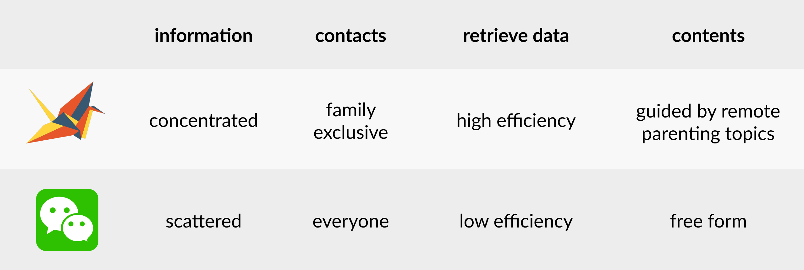
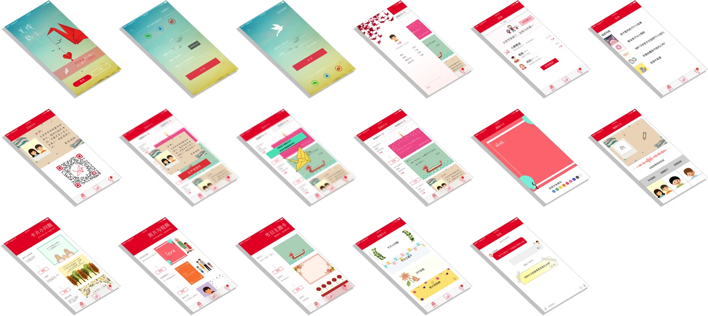
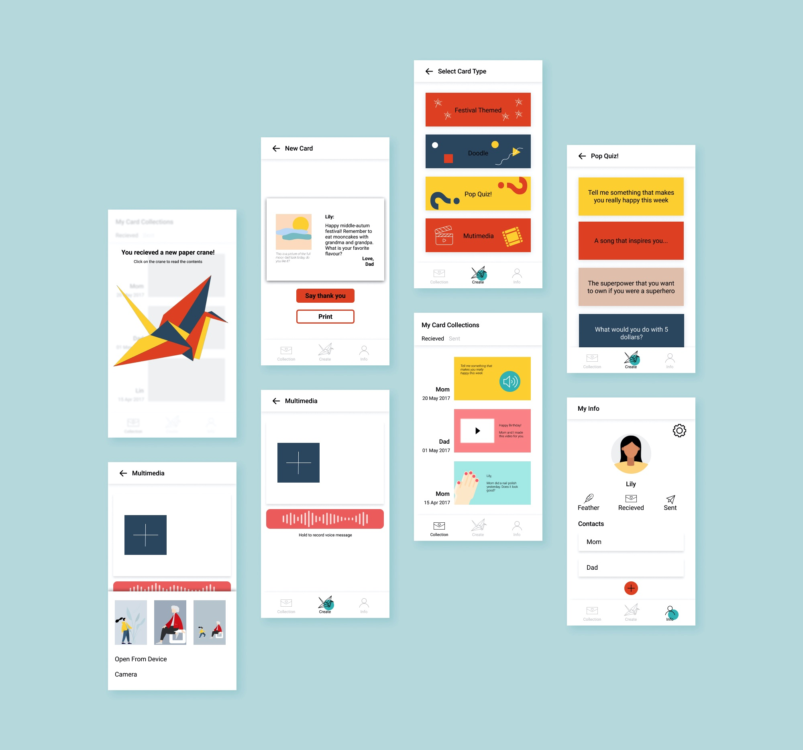

Paper Crane:
Build quality communiation between migrant parents and left-behind children
Award Runner-up of Target Hackathon 2017
My Role Research and Design Lead
Team Sam Li, Kevin Li, Yuxin Wu
Project Description
Paper Crane is a mobile application to better facilitate communication between left-behind children and migrant parents
Background
Yiu, Lisa, and Luo Yun. “China’s Rural Education: Chinese Migrant Children and Left-Behind Children.” Chinese Education & Society 50, no. 4 (July 4, 2017): 307–14.
The Probelm
Target holds over 600 factories across with 3 million workers, among most of which are migrant parents who are working far away from their hometown and family. Due to Chinese Hukou (户口) system, the mobility of left-behind children are restricted. With such a large group of left-behind children being apart with their parents in a long term, a solution to facilitate the communication between left-behind children and their parents is urgently needed.
Symbol and Inspiration

In a featured news story, a left-behind child named Liu Ling folds paper cranes everyday, because she believes that when she folds 1000 paper cranes, her dad will come back home. The paper crane is also a symbol of beautiful hopes and good wishes, representing that both children and parents want each other to be happy and safe everyday even though they are far away. A lot of people also write down their wishes on the back of a paper before folding it into a crane.
Target User
8-14 years old children and their parents.
Field Research

Mother, 59, street cleaner
“I left home and worked in a big city when my kid was 13. My kid has already grown up. I only read a few words, so calling was the most convenient method to contact with my kid. ”
Father, 60, worker
“My son just went to a very good college. We are friends with each other. I call my son everyday, but our conversation topic is pretty cliche, mostly about his grades.”
Daughter, 17, high school
“My parents left me in my second grade and my gradparents raised my up. So I don’t feel so attached to my parents. However, I still wish my parents can care about me. For example, go to school in the morning, eat lunch on time, and not stay up at night. Little things like this can make me very happy.”
Headmaster of Elementary School
“In our school, left-behind children are the most ‘problematic’. A lot of them don't like studying, have bad temper, and their thoughts don’t suit their age. When we talk to them, they always blame their parents do not care about them enough. ”
Insights
-
Migrant parents don't know how to advocate their love due to the long separation with kids
-
Communications through audios and images are preferred due to the insufficient education
-
Verbal cares bring more delights to left-behind children than material goods
-
Conversations about life details are more empowering than perfunctory questions
Pain Points
Lack of bonding time

Singular communication methods
Narrow Scope of conversation topics
The solution
Paper Crane is a mobile application to facilitate quality communication between left-behind children and migrant parents. By encouraging parents and children to celebrate special occasions and share specific contents through cards, drawing, audios, and pictures, Paper Crane is able to document and curate unique memories and advocates the parents to give their children more attention and day-to-day care .
👈click to interact with me!
Key App Features

1) create special memories through various digital cards(handwritten, multi-media, etc)
2) provide conversation starters to foster more diverse communication
3) introduce remote parenting methods to rise parents' awareness of family education
Competitive Analysis
Flow Chart

Prototype Iterations
V1.0 (2017)
I created the first version of the UI design during the Hackathan back to 2017 when I knew little about design. The major critiques I recieved include:
-
The key feature is not prominent (it used to include chatting and reading functions)
-
outdated UI
V2.0(2020)
I updated this project as a design challenge to myself. The renovation began with substraction:
-
Chop down the distracting functions and only focus on one user flow
-
Restart from low-fidelity and concentrate on visual hierarchy
V2.1(2020)
The Impact
1.
Enabling children from disadvantage backgrounds.
2.
Taking social responsibilities.
3.
Buidling positive brand image.
Next Step
-
Usability testing with migrant parents and left-behind children
-
Open reward system and incentify users with Target coupons based on points(feathers)
-
Partnership with NGOs and schools to create larger impact
-
Install card/photo printing machines in factories like Target
Visit Collective Responsibility Website or Wechat Official Account to read more about the Hackathon!